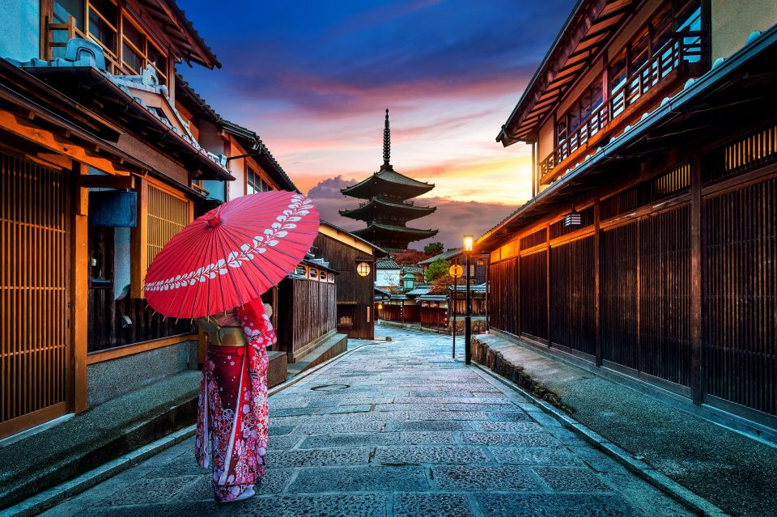
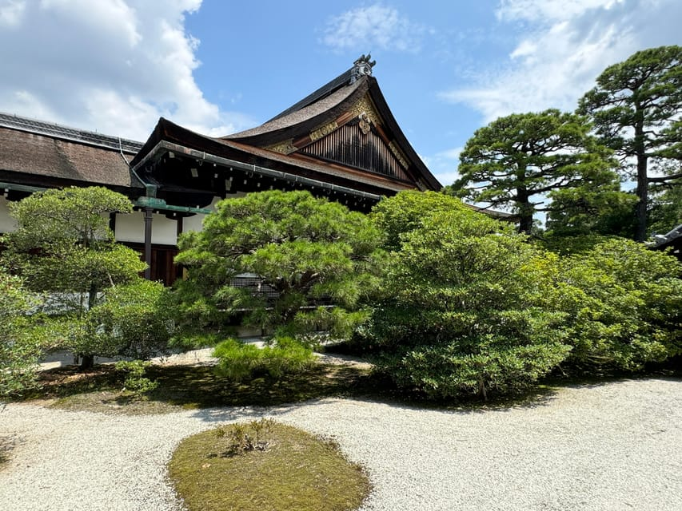
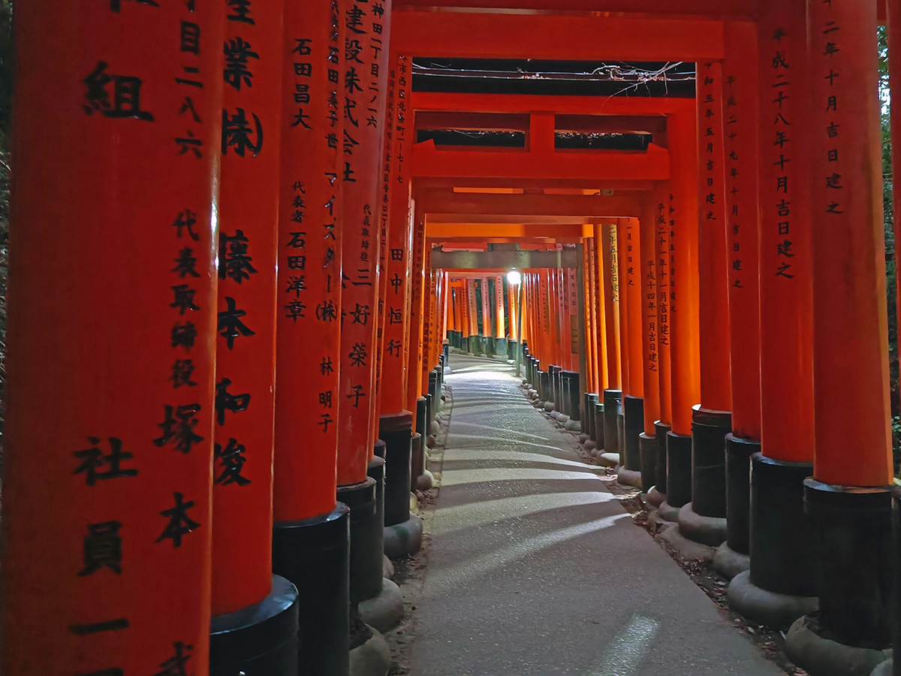
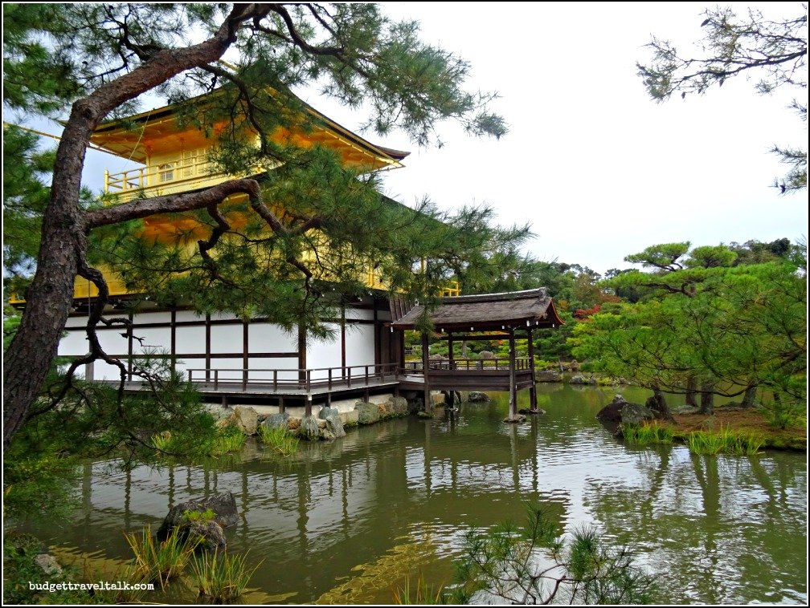
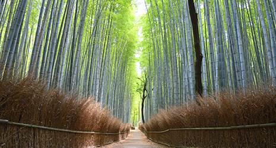
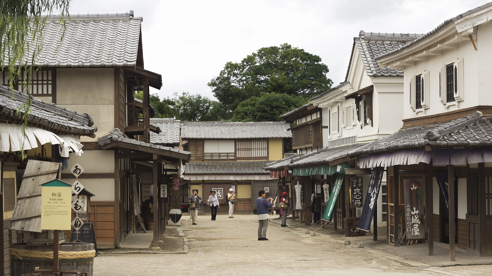
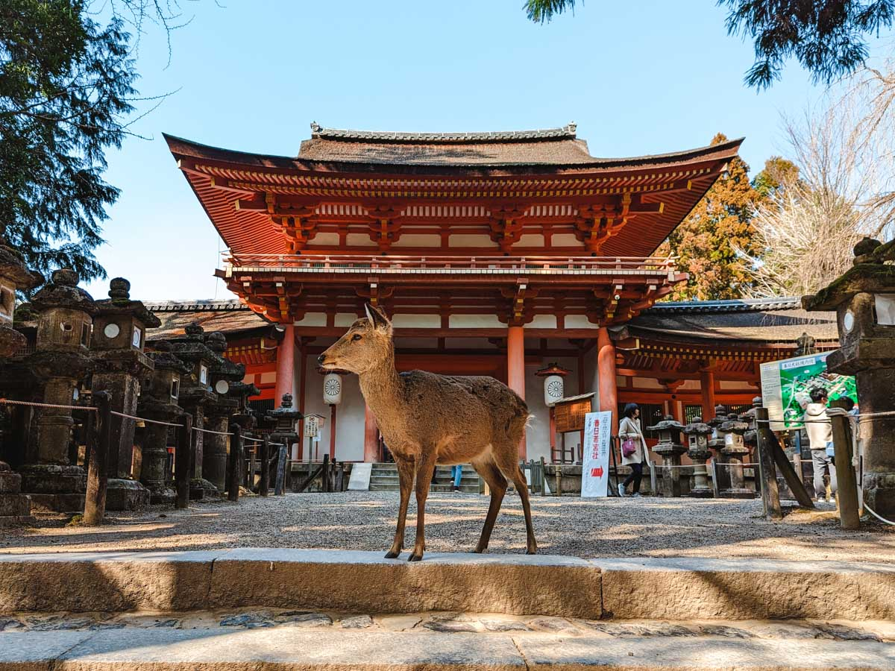
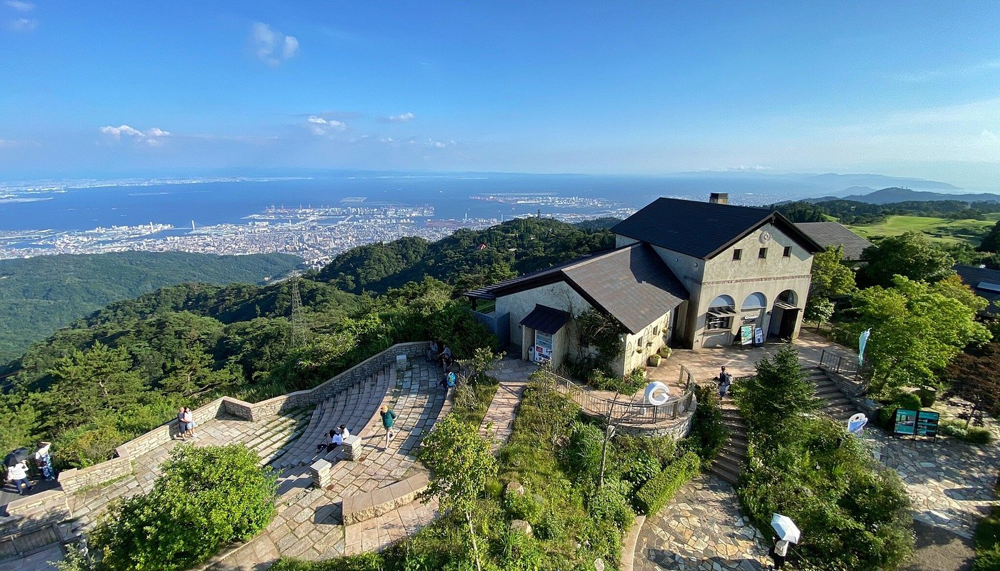
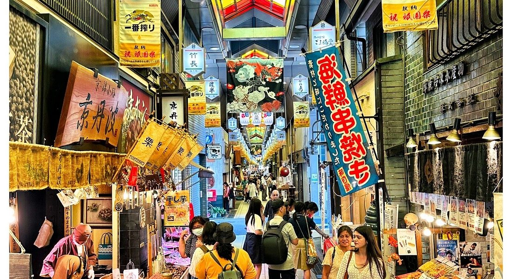

Путеводитель по Киото: 27 июня – 5 июля 2025
Список мест в Киото и Кобе
Достопримечательности
- Fushimi Inari Taisha (4.7): Тысячи красных ворот тории, тропа на гору.
- Kinkaku-ji (4.6): Золотой павильон в саду.
- Arashiyama Bamboo Grove (4.5): Бамбуковая роща, живописная тропа.
- Iwatayama Monkey Park (4.4): Обезьяны и панорама Киото.
- Nishiki Market (4.3): Уличный рынок еды и сувениров.
- Gion District (4.4): Исторический район гейш.
- Kiyomizu-dera (4.5): Храм с панорамной террасой.
- Kyoto Imperial Palace (4.3): Исторический дворец.
- Toei Kyoto Studio Park (4.2): Самурайские декорации, шоу.
- Kyoto University Museum (4.1): Наука и история.
- Todai-ji Temple (4.7): Храм с Великим Буддой.
- Nara Park (4.6): Олени, сады, святилище.
- Disaster Reduction and Human Renovation Institution (4.5): Музей землетрясений, технологии.
- Rokko Garden Terrace (4.4): Смотровая площадка с видом на залив.
Еда
- Katsukura Kyoto Station (4.2): Тонкацу (свиная котлета).
- Gion Kagizen Yoshifusa (4.5): Вагаси и маття.
- Vermillion Cafe (4.2): Сэндвичи и кофе.
- Arashiyama Yoshimura (4.1): Соба с тэмпурой.
- Yudofu Sagano (4.2): Юдофу (тофу в бульоне).
- Arashiyama Kitcho (4.3): Кайсэки.
- Toraya Kyoto (4.5): Вагаси (ёкан).
- Kameya (4.2): Камамеши (рис в горшочке).
- Nakatanidou (4.5): Вагаси (моти).
- Kobe Beef Yamato (4.3): Кобе биф бургер.
- Patisserie Montplus (4.5): Маття-торт.
- Saga Tofu Ine (4.1): Тофу-меню. Адрес: 19 Saga-Tenryuji, Ukyo-ku, Kyoto.
- Uzumasa Ramen (4.0): Рамэн мисо. Адрес: 5-5 Uzumasa, Ukyo-ku, Kyoto.
Бани
- Funaoka Onsen (4.4): Историческое сэнто, тату разрешены.
- Tenzan No Yu (4.3): Онсэн, тату разрешены.
- Kurama Onsen (4.3): Онсэн с частными ваннами, тату разрешены.
- Hana no Yu (4.2): Сэнто, тату разрешены.
- Saga-Toriimoto Onsen (4.2): Онсэн, тату разрешены.
Шопинг
- Nishiki Market (4.3): Вагаси, керамика.
- Toraya Kyoto (4.5): Вагаси, подарочная упаковка.
- Toei Kyoto Studio Park (4.2): Самурайские фигурки.
- Fushimi Inari (4.0): Фигурки лисиц, талисманы. Адрес: 68 Fukakusa Yabunouchicho, Fushimi-ku, Kyoto.
- Ginkaku-ji (4.0): Керамика, открытки. Адрес: 44 Ginkakujicho, Sakyo-ku, Kyoto.
- Arashiyama (4.0): Веера, кимоно. Адрес: 20 Saga-Tenryuji, Ukyo-ku, Kyoto.
- Nara Park (4.0): Фигурки оленей, талисманы. Адрес: 469 Zoshicho, Nara, Nara Prefecture.
- Sannomiya (4.0): Гаджеты, модные аксессуары. Адрес: 1-1-1 Kitanagasadori, Chuo-ku, Kobe, Hyogo Prefecture.
Альтернативные места
- Достопримечательности
- To-ji Temple (4.4): Храм с пагодой и блошиным рынком. Адрес: 1 Kujocho, Minami Ward, Kyoto.
- Philosopher’s Path (4.3): Тропа вдоль канала с храмами.
- Ginkaku-ji (4.4): Серебряный павильон и сад.
- Ryoan-ji (4.3): Храм с садом камней. Адрес: 13 Ryoanji Goryonoshitacho, Ukyo Ward, Kyoto.
- Heian Shrine (4.4): Храм с обширным садом. Адрес: Okazaki Nishitennocho, Sakyo Ward, Kyoto.
- Tenryu-ji (4.4): Храм дзэн с садом. Адрес: 68 Sagatenryuji Susukinobabacho, Ukyo Ward, Kyoto.
- Nijo Castle (4.4): Замок сёгунов с садами. Адрес: 541 Nijojocho, Nakagyo Ward, Kyoto.
- Kobe Nunobiki Herb Garden (4.3): Травяной сад с канатной дорогой. Адрес: 1-4-3 Kitanocho, Chuo Ward, Kobe.
- Kobe Port Tower (4.2): Смотровая башня у порта. Адрес: 2-2 Hatobacho, Chuo Ward, Kobe.
- Meriken Park (4.3): Парк с видом на залив. Адрес: 2-2 Hatobacho, Chuo Ward, Kobe.
- Еда
- Kichi Kichi Omurice (4.5): Знаменитый омлет с рисом. Адрес: 185-4 Nakagyo Ward, Kyoto.
- Ippudo Kyoto (4.2): Рамэн тонкоцу. Адрес: 653-1 Bantoyacho, Nakagyo Ward, Kyoto.
- Kobe Chinatown (4.2): Китайские пельмени и булочки. Адрес: 1-2 Motomachidori, Chuo Ward, Kobe.
- Шопинг
- Teramachi Street (4.2): Арт, книги, сувениры. Адрес: Nakagyo Ward, Kyoto.
- Kyoto Handicraft Center (4.1): Традиционные ремесла. Адрес: 17 Shogoin Entomicho, Sakyo Ward, Kyoto.
- AEON Mall Kyoto (4.0): Одежда и электроника. Адрес: 1 Nishikujo Toriiguchicho, Minami Ward, Kyoto.
- Kawaramachi Street (4.2): Модные магазины. Адрес: Nakagyo Ward, Kyoto.
- Kyoto Nishiki Tenmangu (4.3): Сувениры у храма. Адрес: 537 Nakagyo Ward, Kyoto.
- Kobe Motomachi (4.1): Модные магазины. Адрес: 1-2 Motomachidori, Chuo Ward, Kobe.
Общая информация
- Отель: M's Hotel Sanjo Omiya (4.0). Адрес: 2-488-1 Kiyacho, Nakagyo-ku, Kyoto. Центр, 5 мин от метро Sanjo Keihan, рядом Nishiki Market, Gion.
- Транспорт:
- Переезд 27 июня: Gotemba → Kyoto (Shinkansen Nozomi через Mishima, ~2.5 часа, 12,000 JPY, ~72 EUR).
- Местный транспорт: Kyoto City Subway (Karasuma Line, Tozai Line), автобусы, поезда JR (до Арасиямы, Нары, Кобе).
- Карта ICOCA (2,000 JPY, ~12 EUR, депозит 500 JPY). Работает в Киото, Наре, Кобе.
- Время и стоимость: по Google Maps/Navitime.
- Курс: 1 JPY ≈ 0.006 EUR (апрель 2025).
- Погода: Сезон дождей (15–25°C, влажно). Зонты, легкая одежда, удобная обувь.
- Питание: Бюджет 1,000–2,500 JPY (~6–15 EUR) на обед/ужин. Завтраки: 500–1,500 JPY (~3–9 EUR). Японская кухня: кайсэки, вагаси, рамен.
- Бани (онсэн/сэнто): Тату-дружелюбные или с частными ваннами (kashikiri) для тату на плече и голени. Цены: 490–3,000 JPY (~3–18 EUR).
- Google Maps: Ссылки на маршруты (до 10 точек). Для полной карты создайте Google My Maps (инструкции в конце).
- График: Приезд 27 июня после обеда (~14:00–15:00), отъезд 5 июля утром (~08:00–09:00). Выезд 08:00–09:00, возврат 20:00–22:00. 2–4 активности в день, бани вечером/утром.
- Бронирование:
- Toei Kyoto Studio Park: за месяц (официальный сайт).
- Частные ванны в Kurama Onsen и Tenzan No Yu: за 1–2 недели.
День 1: 27 июня 2025 (Центр Киото, знакомство)
Тема: Гион, рынок, вагаси
Google Maps маршрут: Маршрут 27 июня
- 14:00–15:00 – Приезд и заселение: M's Hotel Sanjo Omiya. Адрес: 2-488-1 Kiyacho, Nakagyo-ku, Kyoto. Время: 1 час.
- 15:00–16:30 – Nishiki Market (4.3): Традиционный рынок, еда, сувениры. Адрес: 609 Nishidaimonjicho, Nakagyo-ku, Kyoto. Время: 1.5 часа. Стоимость: бесплатно. Пешком 10 мин от отеля.
- 17:00–19:00 – Gion District (4.4): Улочки гейш, храм Yasaka Shrine. Адрес: 605-0825 Gionmachi Minamigawa, Higashiyama-ku, Kyoto. Время: 2 часа. Стоимость: бесплатно. Пешком 15 мин.
- 19:30–20:30 – Ужин и сладости в Gion Kagizen Yoshifusa (4.5): Вагаси (моти, намагаши, ~1,000 JPY, ~6 EUR), маття. Адрес: 264 Gionmachi Kitagawa, Higashiyama-ku, Kyoto. Время: 1 час.
- 21:00 – Возврат в отель: Пешком 15 мин. Стоимость: 0 JPY.
- Шопинг: Сувениры на Nishiki Market (4.3): Вагаси, керамика. Адрес: 609 Nishidaimonjicho, Nakagyo-ku, Kyoto.
- Общая стоимость: ~2,500 JPY (~15 EUR).
День 2: 28 июня 2025 (Технологии и старина в центре)
Тема: Поезда, императорская история, сэнто
Google Maps маршрут: Маршрут 28 июня
- 08:00–09:00 – Завтрак: Онигири и кофе в 7-Eleven Sanjo Omiya (3.8) (~500 JPY, ~3 EUR). Адрес: 2-488-1 Kiyacho, Nakagyo-ku, Kyoto. Время: 30 мин.
- 09:00–11:30 – Kyoto Railway Museum (4.4): Интерактивные экспонаты, симуляторы поездов. Адрес: 868 Kameya-cho, Shimogyo-ku, Kyoto. Время: 2.5 часа. Стоимость: 1,200 JPY (~7.2 EUR). Маршрут: метро Tozai Line до Nijo, затем пешком 15 мин (~300 JPY, ~1.8 EUR).
- 12:00–13:00 – Обед в Katsukura Kyoto Station (4.2): Тонкацу (свиная котлета, ~1,500 JPY, ~9 EUR). Адрес: 1 Nishi-Kyogoku, Ukyo-ku, Kyoto. Время: 1 час. Пешком 10 мин.
- 13:30–15:30 – Kyoto Imperial Palace (4.3): Сады, история. Адрес: 1 Nishikyogoku Shinmei-cho, Ukyo-ku, Kyoto. Время: 2 часа. Стоимость: бесплатно. Маршрут: автобус до Marutamachi (~230 JPY, ~1.4 EUR).
- 16:00–17:30 – Сладости в Toraya Kyoto (4.5): Вагаси (ёкан, ~800 JPY, ~4.8 EUR). Адрес: 1 Ichijo-dori, Nakagyo-ku, Kyoto. Время: 1.5 часа. Пешком 10 мин.
- 18:00–20:00 – Funaoka Onsen (4.4): Историческое сэнто, тату разрешены. Горячие ванны, сауна, электрическая ванна (denkiburo). Адрес: 82-1 Minamifunaokacho, Murasakino, Kita-ku, Kyoto City. Время: 2 часа. Стоимость: 490 JPY (~2.9 EUR). Маршрут: автобус до Funaoka Onsen (~230 JPY, ~1.4 EUR).
- 20:30–21:00 – Возврат в отель: Автобус до Sanjo Keihan, затем пешком 5 мин (~230 JPY, ~1.4 EUR).
- Шопинг: Сувениры в Toraya Kyoto (4.5): Вагаси, упаковка для подарков. Адрес: 1 Ichijo-dori, Nakagyo-ku, Kyoto.
- Общая стоимость: ~4,480 JPY (~26.9 EUR).
День 3: 29 июня 2025 (Юг Киото, храмы)
Тема: Храмы, святилища, онсэн
Google Maps маршрут: Маршрут 29 июня
- 08:00–08:30 – Завтрак: Онигири и чай в Lawson Sanjo Omiya (3.9) (~500 JPY, ~3 EUR). Адрес: 2-490 Kiyacho, Nakagyo-ku, Kyoto. Время: 30 мин.
- 09:00–11:30 – Fushimi Inari Taisha (4.7): Тысячи красных ворот тории. Адрес: 68 Fukakusa Yabunouchicho, Fushimi-ku, Kyoto. Время: 2.5 часа. Стоимость: бесплатно. Маршрут: метро Tozai Line до Kyoto Station, затем JR Nara Line до Inari (~300 JPY, ~1.8 EUR).
- 12:00–13:00 – Обед в Vermillion Cafe (4.2): Сэндвичи и кофе (~1,200 JPY, ~7.2 EUR). Адрес: 1-294 Yoshidacho, Fushimi-ku, Kyoto. Время: 1 час. Пешком 10 мин.
- 13:30–16:00 – Kiyomizu-dera (4.5): Храм с панорамой города. Адрес: 1-294 Kiyomizu, Higashiyama-ku, Kyoto. Время: 2.5 часа. Стоимость: 400 JPY (~2.4 EUR). Маршрут: автобус до Kiyomizu-michi (~230 JPY, ~1.4 EUR).
- 16:30–18:30 – Tenzan No Yu (4.3): Онсэн, тату разрешены. Ванны, сауна, открытый ротэнбуро. Адрес: 55-4-7 Saga-Tenryuji, Ukyo-ku, Kyoto. Время: 2 часа. Стоимость: 1,200 JPY (~7.2 EUR). Маршрут: автобус до Saga Arashiyama (~230 JPY, ~1.4 EUR).
- 19:00–20:00 – Ужин в Arashiyama Yoshimura (4.1): Соба с тэмпурой (~1,500 JPY, ~9 EUR). Адрес: 3 Saga-Tenryuji, Ukyo-ku, Kyoto. Время: 1 час. Пешком 10 мин.
- 20:30–21:00 – Возврат в отель: Автобус до Sanjo Keihan (~230 JPY, ~1.4 EUR).
- Шопинг: Сувениры у Fushimi Inari (4.0): Фигурки лисиц, талисманы. Адрес: 68 Fukakusa Yabunouchicho, Fushimi-ku, Kyoto.
- Общая стоимость: ~5,280 JPY (~31.7 EUR).
День 4: 30 июня 2025 (Северо-восток Киото)
Тема: Золотой павильон, философия, сэнто
Google Maps маршрут: Маршрут 30 июня
- 08:00–08:30 – Завтрак: Онигири и кофе в FamilyMart Sanjo Omiya (3.7) (~500 JPY, ~3 EUR). Адрес: 2-489 Kiyacho, Nakagyo-ku, Kyoto. Время: 30 мин.
- 09:00–11:00 – Kinkaku-ji (Golden Pavilion) (4.6): Золотой храм и сады. Адрес: 1 Kinkakujicho, Kita-ku, Kyoto. Время: 2 часа. Стоимость: 500 JPY (~3 EUR). Маршрут: автобус до Kinkakuji-michi (~230 JPY, ~1.4 EUR).
- 11:30–12:30 – Обед в Yudofu Sagano (4.2): Юдофу (тофу в бульоне, ~1,500 JPY, ~9 EUR). Адрес: 45 Saga-Tenryuji, Ukyo-ku, Kyoto. Время: 1 час. Маршрут: автобус (~230 JPY, ~1.4 EUR).
- 13:00–15:00 – Ginkaku-ji (Silver Pavilion) (4.4): Храм и моховые сады. Адрес: 44 Ginkakujicho, Sakyo-ku, Kyoto. Время: 2 часа. Стоимость: 500 JPY (~3 EUR). Маршрут: автобус до Ginkakuji-michi (~230 JPY, ~1.4 EUR).
- 15:30–17:00 – Philosopher’s Path (4.3): Прогулка вдоль канала. Адрес: 1-294 Philosopher’s Path, Sakyo-ku, Kyoto. Время: 1.5 часа. Стоимость: бесплатно. Пешком 10 мин.
- 17:30–19:30 – Hana no Yu (4.2): Сэнто, тату разрешены. Ванны, джакузи. Адрес: 1-1 Horikawa-dori, Nakagyo-ku, Kyoto. Время: 2 часа. Стоимость: 800 JPY (~4.8 EUR). Маршрут: автобус до Horikawa-dori (~230 JPY, ~1.4 EUR).
- 20:00–21:00 – Возврат в отель: Пешком 10 мин. Стоимость: 0 JPY.
- Шопинг: Сувениры у Ginkaku-ji (4.0): Керамика, открытки. Адрес: 44 Ginkakujicho, Sakyo-ku, Kyoto.
- Общая стоимость: ~4,720 JPY (~28.3 EUR).
День 5: 1 июля 2025 (Арасияма)
Тема: Природа, обезьяны, онсэн
Google Maps маршрут: Маршрут 1 июля
- 08:00–08:30 – Завтрак: Онигири и чай в 7-Eleven Sanjo Omiya (3.8) (~500 JPY, ~3 EUR). Адрес: 2-488-1 Kiyacho, Nakagyo-ku, Kyoto. Время: 30 мин.
- 09:00–11:30 – Arashiyama Bamboo Grove (4.5): Бамбуковая роща. Адрес: 20 Saga-Tenryuji, Ukyo-ku, Kyoto. Время: 2.5 часа. Стоимость: бесплатно. Маршрут: метро Tozai Line до Kyoto Station, затем JR Sagano Line до Saga-Arashiyama (~400 JPY, ~2.4 EUR).
- 12:00–13:00 – Обед в Arashiyama Kitcho (4.3): Кайсэки (традиционный обед, ~2,000 JPY, ~12 EUR). Адрес: 58 Saga-Tenryuji, Ukyo-ku, Kyoto. Время: 1 час. Пешком 10 мин.
- 13:30–15:30 – Iwatayama Monkey Park (4.4): Обезьяны, виды на Киото. Адрес: 8 Saga-Tenryuji, Ukyo-ku, Kyoto. Время: 2 часа. Стоимость: 600 JPY (~3.6 EUR). Пешком 15 мин.
- 16:00–18:00 – Saga-Toriimoto Onsen (4.2): Онсэн, тату разрешены. Ротэнбуро, сауна. Адрес: 1-1 Saga-Tenryuji, Ukyo-ku, Kyoto. Время: 2 часа. Стоимость: 1,000 JPY (~6 EUR). Пешком 10 мин.
- 18:30–19:30 – Ужин в Saga Tofu Ine (4.1): Тофу-меню (~1,500 JPY, ~9 EUR). Адрес: 19 Saga-Tenryuji, Ukyo-ku, Kyoto. Время: 1 час. Пешком 5 мин.
- 20:00–21:00 – Возврат в отель: JR Sagano Line до Kyoto Station, затем метро Tozai Line до Sanjo Keihan (~400 JPY, ~2.4 EUR).
- Шопинг: Сувениры в Arashiyama (4.0): Веера, кимоно. Адрес: 20 Saga-Tenryuji, Ukyo-ku, Kyoto.
- Общая стоимость: ~6,400 JPY (~38.4 EUR).
День 6: 2 июля 2025 (Киото и Курама)
Тема: Самураи, наука, онсэн
Google Maps маршрут: Маршрут 2 июля
- 08:00–08:30 – Завтрак: Онигири и кофе в Lawson Sanjo Omiya (3.9) (~500 JPY, ~3 EUR). Адрес: 2-490 Kiyacho, Nakagyo-ku, Kyoto. Время: 30 мин.
- 09:00–12:00 – Toei Kyoto Studio Park (4.2): Самурайские декорации, шоу. Адрес: 10 Uzumasa Higashi, Ukyo-ku, Kyoto. Время: 3 часа. Стоимость: 2,400 JPY (~14.4 EUR). Маршрут: метро Tozai Line до Uzumasa-Tenjingawa (~300 JPY, ~1.8 EUR).
- 12:30–13:30 – Обед в Uzumasa Ramen (4.0): Рамэн мисо (~1,200 JPY, ~7.2 EUR). Адрес: 5-5 Uzumasa, Ukyo-ku, Kyoto. Время: 1 час. Пешком 5 мин.
- 14:00–16:00 – Kyoto University Museum (4.1): Наука и история. Адрес: Yoshida-Honmachi, Sakyo-ku, Kyoto. Время: 2 часа. Стоимость: 400 JPY (~2.4 EUR). Маршрут: автобус до Kyoto University (~230 JPY, ~1.4 EUR).
- 16:30–19:30 – Kurama Onsen (4.3): Онсэн с частными ваннами (kashikiri, тату OK). Ротэнбуро, сауна. Адрес: 520 Kurama Honmachi, Sakyo-ku, Kyoto. Время: 3 часа. Стоимость: 2,500 JPY (~15 EUR, kashikiri). Маршрут: Eizan Railway до Kurama (~450 JPY, ~2.7 EUR).
- 20:00–21:00 – Возврат в отель: Eizan Railway до Demachiyanagi, затем метро Tozai Line до Sanjo Keihan (~450 JPY, ~2.7 EUR).
- Шопинг: Сувениры в Toei Kyoto Studio Park (4.0): Самурайские фигурки. Адрес: 10 Uzumasa Higashi, Ukyo-ku, Kyoto.
- Общая стоимость: ~7,480 JPY (~44.9 EUR).
День 7: 3 июля 2025 (Поездка в Нара)
Тема: Олени, Великий Будда, сэнто
Google Maps маршрут: Маршрут 3 июля
- 08:00–08:30 – Завтрак: Онигири и кофе в 7-Eleven Sanjo Omiya (3.8) (~500 JPY, ~3 EUR). Адрес: 2-488-1 Kiyacho, Nakagyo-ku, Kyoto. Время: 30 мин.
- 09:00–10:00 – Переезд в Нара: JR Nara Line от Kyoto Station до Nara Station (~720 JPY, ~4.3 EUR). Время: 45 мин.
- 10:30–12:30 – Todai-ji Temple (4.7): Храм с Великим Буддой, исторические залы. Адрес: 406-1 Zoshicho, Nara, Nara Prefecture. Время: 2 часа. Стоимость: 600 JPY (~3.6 EUR). Пешком 15 мин от станции.
- 13:00–14:00 – Обед в Kameya (4.2): Камамеши (рис в горшочке, ~1,500 JPY, ~9 EUR). Адрес: 9-1 Higashimuki Nakamachi, Nara, Nara Prefecture. Время: 1 час. Пешком 10 мин.
- 14:30–16:30 – Nara Park (4.6): Олени, сады, святилище Касуга-тайша. Адрес: 469 Zoshicho, Nara, Nara Prefecture. Время: 2 часа. Стоимость: бесплатно (корм для оленей ~200 JPY, ~1.2 EUR). Пешком 5 мин.
- 17:00–18:30 – Сладости в Nakatanidou (4.5): Вагаси (моти, ~800 JPY, ~4.8 EUR). Адрес: 29 Hashimotocho, Nara, Nara Prefecture. Время: 1.5 часа. Пешком 10 мин.
- 21:30–22:30 – Возврат в Киото: JR Nara Line до Kyoto Station, затем метро Tozai Line до Sanjo Keihan (~720 JPY, ~4.3 EUR). Время: 1 час.
- Шопинг: Сувениры в Nara Park (4.0): Фигурки оленей, талисманы. Адрес: 469 Zoshicho, Nara, Nara Prefecture.
- Общая стоимость: ~7,540 JPY (~45.2 EUR).
День 8: 4 июля 2025 (Поездка в Кобе)
Тема: Технологии, современный город, смотровая площадка
Google Maps маршрут: Маршрут 4 июля
- 08:00–08:30 – Завтрак: Онигири и чай в Lawson Sanjo Omiya (3.9) (~500 JPY, ~3 EUR). Адрес: 2-490 Kiyacho, Nakagyo-ku, Kyoto. Время: 30 мин.
- 09:00–10:00 – Переезд в Кобе: JR Tokaido-Sanyo Line от Kyoto Station до Sannomiya Station (~1,100 JPY, ~6.6 EUR, ICOCA покрывает). Время: 50 мин.
- 10:30–12:30 – Disaster Reduction and Human Renovation Institution (4.5): Интерактивный музей землетрясений, симуляторы, технологии безопасности. Адрес: 1-5-2 Wakinohamakaigandori, Chuo-ku, Kobe, Hyogo Prefecture. Время: 2 часа. Стоимость: 600 JPY (~3.6 EUR). Пешком 15 мин от станции.
- 13:00–14:00 – Обед в Kobe Beef Yamato (4.3): Кобе биф бургер (~1,500 JPY, ~9 EUR). Адрес: 1-1-1 Kitanagasadori, Chuo-ku, Kobe, Hyogo Prefecture. Время: 1 час. Пешком 10 мин.
- 14:30–16:30 – Rokko Garden Terrace (4.4): Смотровая площадка с видом на залив, современные инсталляции. Адрес: 1877-9 Rokkosancho, Nada-ku, Kobe, Hyogo Prefecture. Время: 2 часа. Стоимость: 1,000 JPY (~6 EUR, фуникулёр). Фуникулёр от Rokko Station (~600 JPY, ~3.6 EUR).
- 17:00–18:30 – Сладости в Patisserie Montplus (4.5): Вагаси (маття-торт, ~800 JPY, ~4.8 EUR). Адрес: 3-1-1 Shinoharaminamimachi, Nada-ku, Kobe, Hyogo Prefecture. Время: 1.5 часа. Пешком 10 мин от Rokko Station.
- 21:30–22:30 – Возврат в Киото: JR Tokaido-Sanyo Line до Kyoto Station, затем метро Tozai Line до Sanjo Keihan (~1,100 JPY, ~6.6 EUR). Время: 1 час.
- Шопинг: Сувениры в Sannomiya (4.0): Гаджеты, модные аксессуары. Адрес: 1-1-1 Kitanagasadori, Chuo-ku, Kobe, Hyogo Prefecture.
- Общая стоимость: ~10,800 JPY (~64.8 EUR).
День 9: 5 июля 2025 (Киото, отъезд)
Тема: Финальный шопинг, отдых
Google Maps маршрут: Маршрут 5 июля
- 07:30–08:00 – Завтрак: Онигири и чай в 7-Eleven Sanjo Omiya (3.8) (~500 JPY, ~3 EUR). Адрес: 2-488-1 Kiyacho, Nakagyo-ku, Kyoto. Время: 30 мин.
- 08:00–11:00 – Шопинг: Сувениры на Nishiki Market (4.3): Вагаси, керамика. Адрес: 609 Nishidaimonjicho, Nakagyo-ku, Kyoto. Время: 3 часа.
- 11:30–12:30 – Обед в Katsukura Kyoto Station (4.2): Тонкацу (~1,500 JPY, ~9 EUR). Адрес: 1 Nishi-Kyogoku, Ukyo-ku, Kyoto. Время: 1 час. Маршрут: метро Tozai Line до Kyoto Station (~300 JPY, ~1.8 EUR).
- 13:00 – Выезд:
- Киото → аэропорт Кансай (JR Haruka Express, 80 мин, 2,850 JPY, ~17.1 EUR).
- Или: Киото → Токио (Shinkansen Nozomi, 2.5 часа, 13,000 JPY, ~78 EUR) для рейса из Ханэды/Нариты.
- Общая стоимость: ~5,150 JPY (~30.9 EUR, без учета переезда).
Создание Google My Maps
- Зайдите в Google My Maps (www.google.com/maps/d/).
- Создайте новую карту, добавьте слои (Фудзи, Киото, Нара, Кобе).
- Импортируйте адреса из маршрутов (копируйте из ссылок Google Maps).
- Настройте метки (иконки, цвета) для достопримечательностей, еды, шопинга.
- Сохраните и используйте офлайн через приложение Google Maps.
Общая стоимость поездки
- Фудзи (2 дня): ~8,600 JPY (~51.6 EUR).
- Киото, Нара, Кобе (9 дней): ~49,860 JPY (~299.2 EUR).
- Переезды: ~17,470 JPY (~104.8 EUR, включая Shinkansen, JR Haruka).
- Итого: ~75,930 JPY (~455.6 EUR, без отелей, покупок, билетов на самолет).